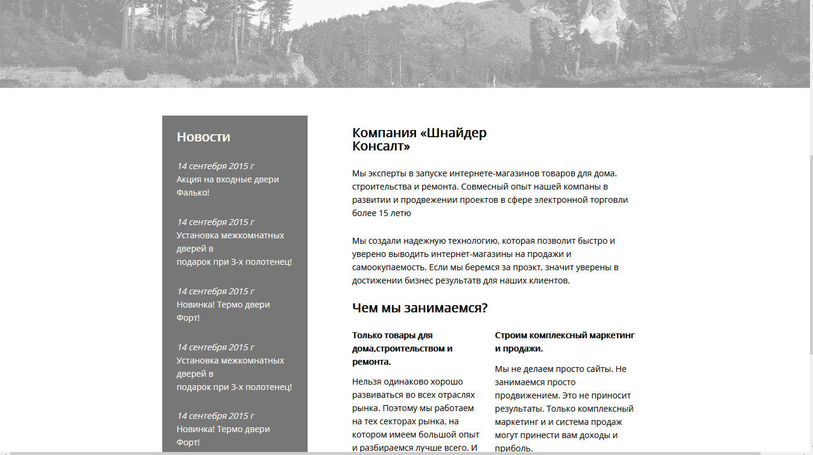
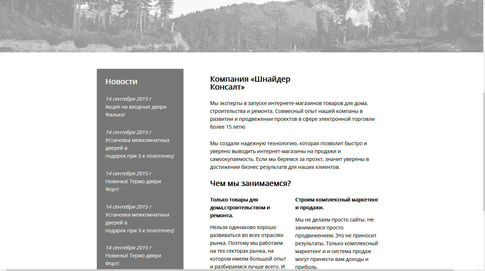
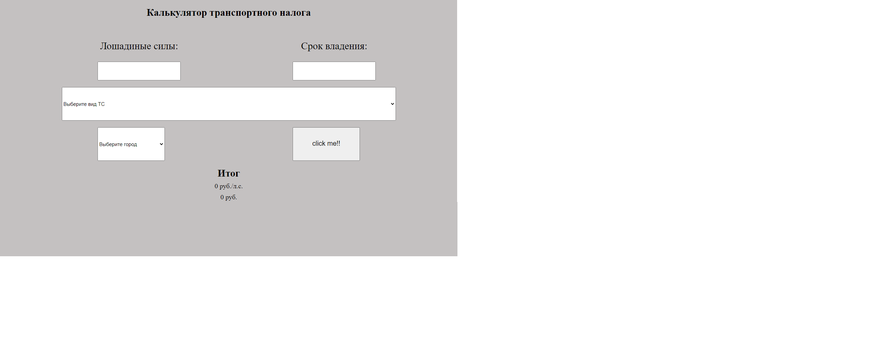
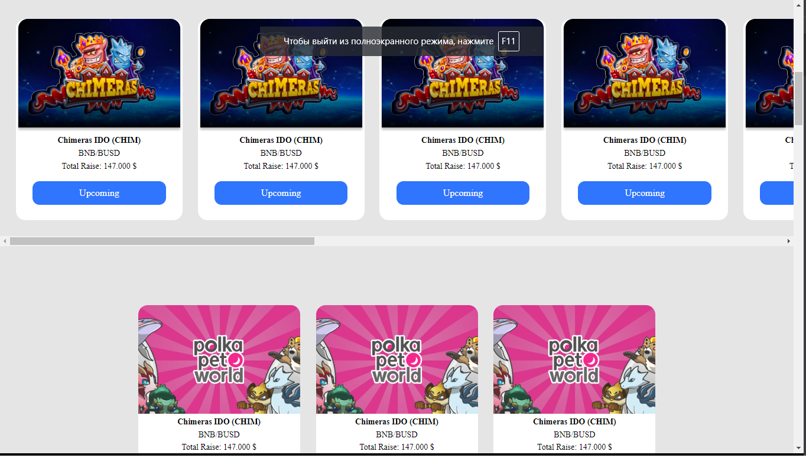
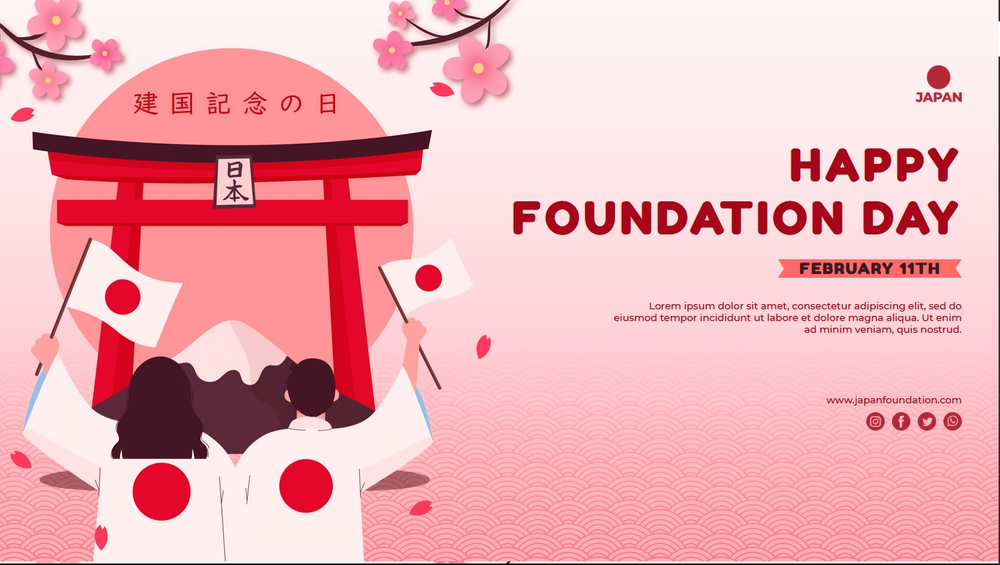
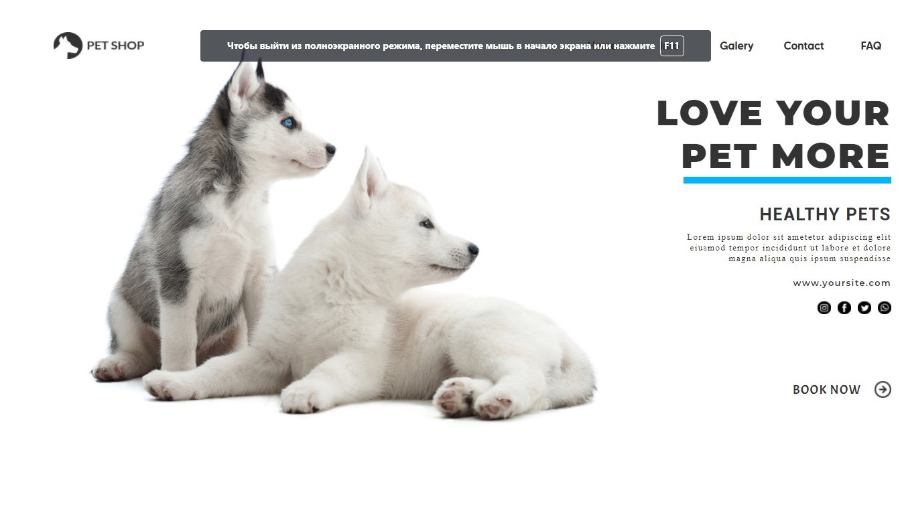
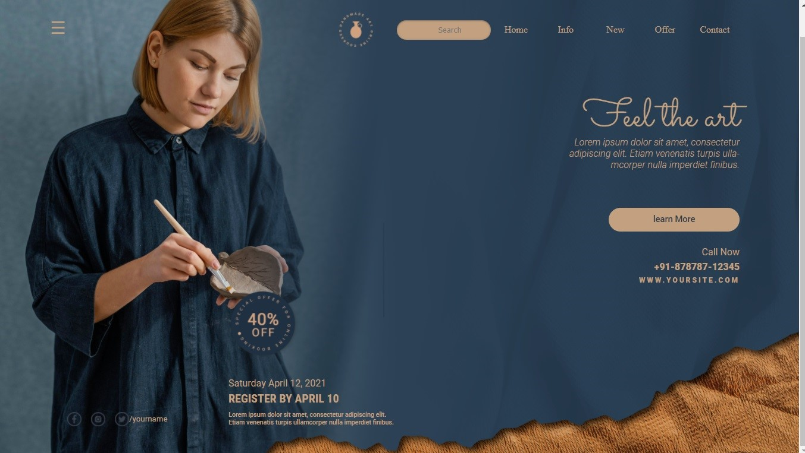
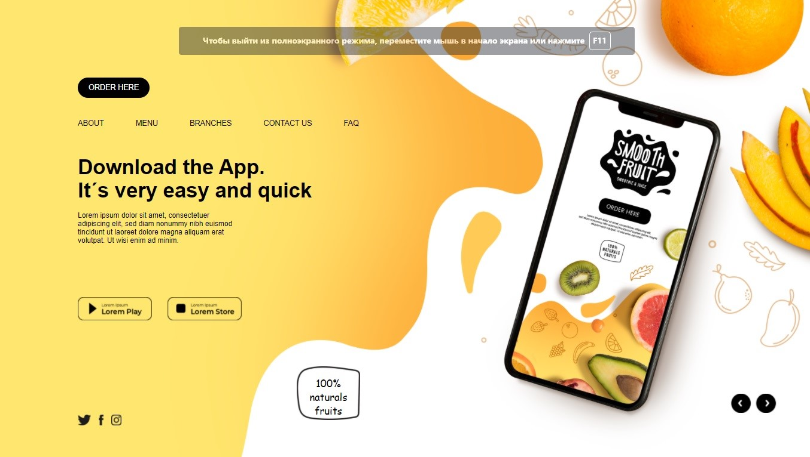
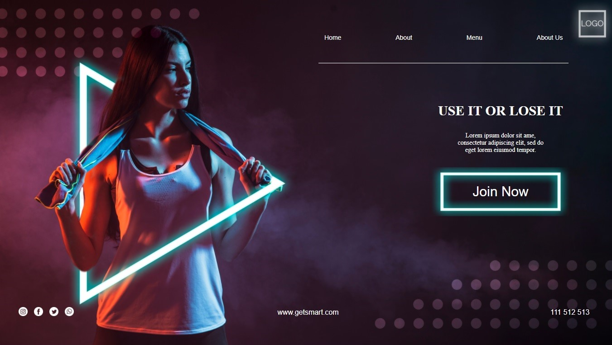

Test Task
 Тестовое задание для работодателя
 Тестовое задание для работодателя
 Проверка способностей JavaScript.
 Тренировка для улучшения работы и квалификации и увеличения портфолио

Тренировка для улучшения работы и квалификации и увеличения портфолио
Пример сайта взят с:
Template PSD создан(а) freepik - ru.freepik.com
Тренировка для улучшения работы и квалификации и увеличения портфолио
Пример сайта взят с:
Template PSD создан(а) freepik - ru.freepik.com

Это мой четвёртый проект. Я попытался сделать все идельно (не считая
шрифтов, которые программа наотрез отказала показывать). Я сделал
идеальную разметку, чтобы всё показывалось, как на примере.
Пример сайта взят с:
Template PSD создан(а) freepik - ru.freepik.com

Это третий сайт, что у меня получился. В нем было использовано
максимальное количество новых технологий "HТML5 и CSS3".
Он был изготовлен без таблиц шрифтов, который должен был предоставлен
дизайнером.
Также я сделал, чтобы следущее редактирование было возможно, чтобы код
был читабельным для другого верстальщика. По-скольку я не знал как
сделать со скролом или нет, я сделал чтобы вся картинка была видна,
для того чтобы как можно точней попасть в пример.
Пример сайта:
Template PSD создан(а) freepik - ru.freepik.com

Это второй сайт, где уже стало намного все аккуратней и практичней. Не
заходя за грани, рискнул подобрать нужные цвета и шрифты, и что бы все
не распалось при расширения или сужения экрана
Я этом проекте были исправлены ошибки прошлого сайта. Теперь сайт
изменяется, если у вас поднимается меню пуска. Попробовал помочь
слепым, что бы они тоже могли использовать сайтом. Из-за большой
картинки у меня не получилось слелать без скрола. Сложно, когда
клиента нет, который скажет - что хорошо, а что надо поменять.Надеюсь,
это измениться в будущем!
Пример сайта:
Template PSD создан(а) freepik - ru.freepik.com

Это мой первый сайт, мой первый проект, в котором мне понравился
результат. Естественно он с ошибками и тогда я не знал как их
исправить, но в следующем проекте исправил недостатки. Надеюсь,
клиентам понравился мой сайт, и было удобно и приятно им
пользоваться
Пример сайта:
Template PSD создан(а) freepik - ru.freepik.com